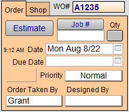
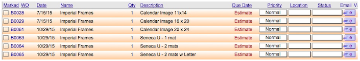
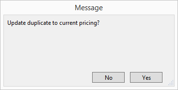

Create a Work Order Template
or
Create simple templates in FrameReady to ensure that all the necessary charges are entered for repeat designs (i.e. Needlework, Jerseys, etc.) or for handling Poster Specials, Printing, or Scanning.
Before You Begin...
-
A Work Order Template is a pre-made Work Order designed to speed up the creation of common or repeat orders.
-
Create simple templates in FrameReady to ensure that all the necessary charges are entered for repeat designs, for example, Needlework, Jerseys, etc., or for handling Poster Specials, Printing, or Scanning.
Tip: To set up fixed-price Work Orders, see Set up Package Specials.
-
The Template is used to quickly repeat an order but is still able to reflect adjustments to size and materials.
Template vs Package Special
You may also use the Package Specials feature; however Package Specials is a more generic tool for selling diploma frames or poster frames (for example).
-
The Package Special locks the price and is for a specific size, but you can enter different materials.
-
The Template is used to keep the materials the same but lets you change the price and the size.
How to Create a Work Order Template
-
Create a new Work Order for each design you would need to repeat, e.g. Template for Jerseys.
-
Use your Gallery ID# as the Customer‘s Name.
Tip: Type the name Gallery into the ID number field and your account is automatically entered. This is beneficial because Work Orders with the customer as Gallery can never be accidentally posted to an Invoice.
-
Select the type of Artwork being handled, e.g. Jersey, or the service being done, e.g. Scanning.
-
In the Order Taken By field choose Templates .

If not available, select Edit… from the dropdown list and manually add Templates to the list.
This makes it easier in the future to find all of the Templates or just a list of Templates specific to a type of framing. You combine the search with the Artwork field, e.g. Jersey, and the Order Taken By field, e.g. Template, to find all the different templates you have for Jerseys. -
Change each of these Template Work Orders to Estimate.
This ensures that the templates do not get processed as a regular Work Order with materials being added to your Frame Order or Purchase Order.
How to Find a Work Order Template
-
From the Main Menu click the Find Work Order button.
Or, go to the Work Order file and click on the Find button. -
In the Find window, select Templates from the Order Taken By field (or Artwork category value list if you have used it.)
-
Click on the Perform Find button.
A list of all of your templates appears.

How to Use a Work Order Template
-
Locate the Work Order Template you wish to use; switch to Form View.
-
Click the Duplicate Work Order sidebar button.

-
A dialog box appears asking if you wish to include customer information in the duplicate. Choose No.

-
A second dialog box appears asking if you wish to update the duplicate to current pricing (optional).

-
A duplicate copy of Work Order, with the current date, appears. The Order Taken By field resets to the default name or is left blank.
Enter the customer information as per usual.
If you have used the Artwork field to identify this as a Template, then click on the word Template and select the actual item being framed. Do not leave the Artwork field set to “Template” - otherwise the next time you search for Templates the results will include actual Work Orders.
-
Click the green Activate button.
This Work Order is now part of your work flow, incomplete list, materials can be ordered, it can be posted to an Invoice, etc.
© 2023 Adatasol, Inc.